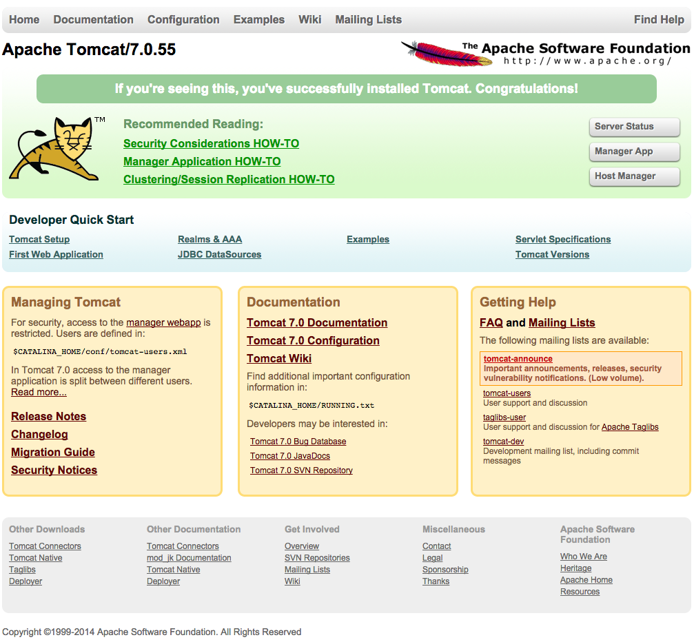

Tomcat
Tomcat
Les serveurs jee se divisent en 2 grandes familles :
- Les conteneurs de servlets : serveur http + sous partie des specs jee (servlets, jsp, jndi, jdbc...).
- Les conteneurs d'applications : support de toutes les spécifications jee.
Nous allons nous intéresser uniquement aux conteneurs de servlets : Il sont suffisants pour notre besoin.
Tomcat
Nous allons utiliser le serveur de la fondation apache : tomcat.
On commence par télécharger la dernière version 6.0.x de tomcat
On décompresse l'archive et on copie le répertoire apache-tomcat-6.0.xx dans son home directory.
On peut dès à présent lancer le serveur
> cd ~/apache-tomcat-6.0.xx > ./bin/startup.sh Using CATALINA_BASE: "/home/user/apache-tomcat-6.0.32" Using CATALINA_HOME: "/home/user/apache-tomcat-6.0.32" Using CATALINA_TMPDIR: "/home/user/apache-tomcat-6.0.32/temp" Using JRE_HOME: "/path/to/java/jdk1.6.0_17" Using CLASSPATH: /home/user/apache-tomcat-6.0.32/bin/bootstrap.jar"
Et aller sur la page http://localhost:8080/
C'est la page d'accueil de tomcat. Il y quelques liens et exemples accessibles depuis celle-ci.
En pratique, on y va jamais.
Les répertoires de tomcat
Voici les répertoires à la racine de tomcat :
> cd ~/apache-tomcat-6.0.xx > ls d---- 16/06/2011 21:27 bin les exécutables d---- 16/06/2011 21:30 conf la configuration de tomcat et des applications d---- 16/06/2011 21:27 lib les librairies (.jar) d---- 16/06/2011 21:30 logs les logs du serveur d---- 16/06/2011 21:27 temp répertoire de travail pour les applications d---- 16/06/2011 21:28 webapps les applications d---- 16/06/2011 21:30 work répertoire de travail de tomcat -a--- 16/06/2011 21:26 38657 LICENSE -a--- 16/06/2011 21:26 574 NOTICE -a--- 16/06/2011 21:26 8672 RELEASE-NOTES -a--- 16/06/2011 21:26 6836 RUNNING.txt
Et la signification des variables d'environnement qui apparaissent au démarrage :
- CATALINA_HOME : c'est le répertoire d'installation de tomcat (bin, conf tomcat, lib)
- CATALINA_BASE : c'est le répertoire où sont les applications (webapps, conf applications)
- CATALINA_TMPDIR : c'est le répertoire de travail
Tomcat peut donc être installé dans un répertoire et les applications peuvent être ailleurs.
On peut donc lancer plusieurs fois le même tomcat avec à chaque fois des applications différentes.
Contrôler tomcat
Le répertoire bin de $CATALINA_HOME contient les script startup.sh et shutdown.sh (*.bat sous windows).
Les applications
Une installation de tomcat vient avec quelques applications de démonstration
> ls ~/apache-tomcat-6.0.xx/webapps d---- 16/06/2011 21:28 docs d---- 16/06/2011 21:28 examples d---- 16/06/2011 21:28 host-manager d---- 16/06/2011 21:28 manager d---- 16/06/2011 21:28 ROOT
L'application examples est accessible sur http://localhost:8080/examples
L'application ROOT est particulière, elle répond à la racine http://localhost:8080/, c'est l'application qui sert de page d'acceuil.
Tomcat charge toutes ces applications au démarrage.
Dans ce répertoire, on peut trouver :
- des répertoires d'applications
- des fichiers .war : ce sont des applications zippées (packagées)
Structure d'une application
Canoniquement, les applications web java sont des archiches (zip) avec l'extension .war.

La structure interne d'un war est la suivante.
Le répertoire WEB-INF est un répertoire protégé.
Ses fichiers ne sont pas accessibles depuis un navigateur web :
- classes : les classes java du projet
- lib : les librairies additionnelles
- jsp : les fichiers jsp
- tags : des morceaux de jsp réutilisables
- tld : des descripteur de tags et fonctions
- web.xml : le descripteur de déploiement
A la racine, on trouve les fichiers publiques accessibles depuis un navigateur : fichiers hmtl, css, images...
Les outils de build tel que maven et les IDE aident à contruire cette archive.
Sécurité
Certaines de ces applications sont protégées par autentification de type BASIC (popup navigateur quand on tente d'aller sur l'application.)
C'est le cas de l'application manager qui nécessite un user avec un rôle manager-gui.
Pour des raisons de sécurité, aucun utilisateur n'est défini par défaut.
Le fichier $CATALINA_HOME/conf/tomcat-users.xml permet de rajouter un user.
<user username="admin" password="admin" roles="manager-status"/>
Et on redémarre tomcat et l'utilisateur admin a ainsi accès à http://localhost:8080/manager/status
Pour l'interface d'admin, il faut le rôle manager-gui :
<user username="admin" password="admin" roles="manager-status,manager-gui"/>
Et la page http://localhost:8080/manager/html devient accessible.
Cette page permet d'administrer toutes les applications déployées dans le serveur.
En pratique, on ne l'utilise jamais.
Le fichier tomcat-users.xml définit un ensemble d'utilisateurs valable pour toutes les applications déployées.
En sécurité, cet ensemble est appelé realm (domaine).
Le fichier tomcat-user.xml est le fichier de configuration par défaut du Memory Based Realm de tomcat.